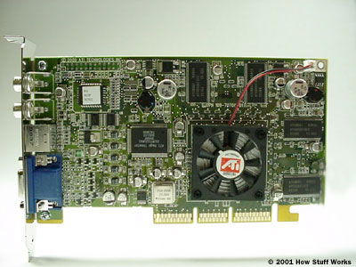

How does GPU works?

The images you see on your monitor are made of tiny dots called pixels. At most common resolution settings, a screen displays over a million pixels, and the computer has to decide what to do with every one in order to create an image. To do this, it needs a translator -- something to take binary data from the CPU and turn it into a picture you can see. Unless a computer has graphics capability built into the motherboard, that translation takes place on the graphics card.
A graphics card's job is complex, but its principles and components are easy to understand. In this article, we will look at the basic parts of a video card and what they do. We'll also examine the factors that work together to make a fast, efficient graphics card.
Think of a computer as a company with its own art department. When people in the company want a piece of artwork, they send a request to the art department. The art department decides how to create the image and then puts it on paper. The end result is that someone's idea becomes an actual, viewable picture.
A graphics card works along the same principles. The CPU, working in conjunction with software applications, sends information about the image to the graphics card. The graphics card decides how to use the pixels on the screen to create the image. It then sends that information to the monitor through a cable.
Creating an image out of binary data is a demanding process. To make a 3-D image, the graphics card first creates a wire frame out of straight lines. Then, it rasterizes the image (fills in the remaining pixels). It also adds lighting, texture and color. For fast-paced games, the computer has to go through this process about sixty times per second. Without a graphics card to perform the necessary calculations, the workload would be too much for the computer to handle.
The graphics card accomplishes this task using four main components:
A graphics card's job is complex, but its principles and components are easy to understand. In this article, we will look at the basic parts of a video card and what they do. We'll also examine the factors that work together to make a fast, efficient graphics card.
Think of a computer as a company with its own art department. When people in the company want a piece of artwork, they send a request to the art department. The art department decides how to create the image and then puts it on paper. The end result is that someone's idea becomes an actual, viewable picture.
A graphics card works along the same principles. The CPU, working in conjunction with software applications, sends information about the image to the graphics card. The graphics card decides how to use the pixels on the screen to create the image. It then sends that information to the monitor through a cable.
Creating an image out of binary data is a demanding process. To make a 3-D image, the graphics card first creates a wire frame out of straight lines. Then, it rasterizes the image (fills in the remaining pixels). It also adds lighting, texture and color. For fast-paced games, the computer has to go through this process about sixty times per second. Without a graphics card to perform the necessary calculations, the workload would be too much for the computer to handle.
The graphics card accomplishes this task using four main components:
- A motherboard connection for data and power
- A processor to decide what to do with each pixel on the screen
- Memory to hold information about each pixel and to temporarily store completed pictures
- A monitor connection so you can see the final result